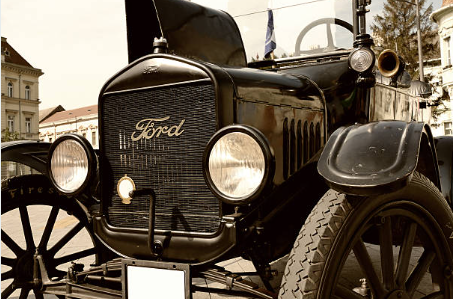
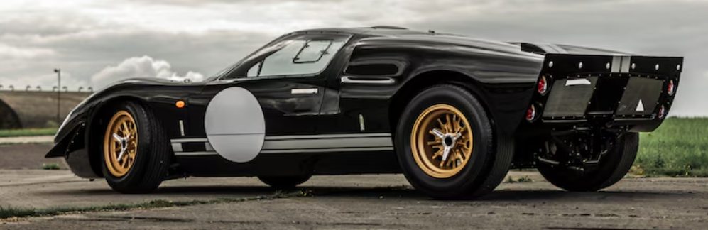
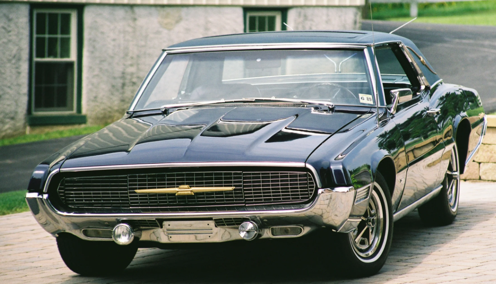
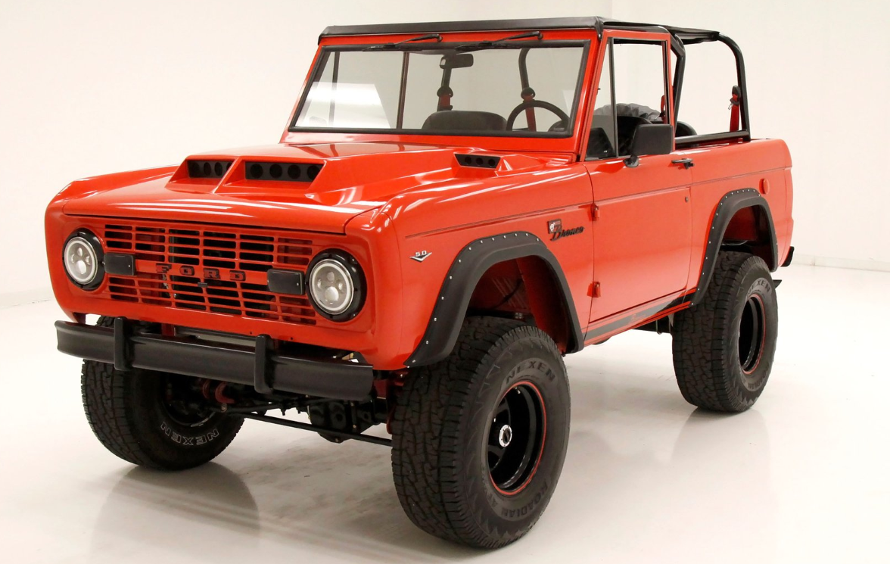

1908 — 1927THE ORIGINAL ICON
Ford Model T
The car that made motoring accessible and changed the automobile industry forever.

A LEGACY BUILT TO MOVE THE WORLD
Discover the stories, engineering and timeless design behind the Ford cars that shaped generations.
From the Model T that put the world on wheels to the machines that conquered the racetrack, Ford's story is one of bold ideas and lasting impact.
A little more about us ↗A closer look at the cars that became legends.

1908 — 1927The car that made motoring accessible and changed the automobile industry forever.
 1927 — 1931
1927 — 1931A fresh design and improved engineering carried Ford into a new era.
 1940
1940Distinctive pre-war styling paired with the character of Ford's V8 era.
An unmistakable design that helped define the American pony car.

1964 — 1969A motorsport legend remembered for its remarkable Le Mans victories.

1955 — 2005American style and comfort with a distinctive sporting character.
 1953 — 1983
1953 — 1983A landmark in the F-Series story, built around practical capability.

1966 — TODAYAn adventurous SUV with a legacy rooted in off-road exploration.
No models match your search. Try another name.